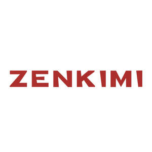

Trade Mark Journal No.2025/039 26 September 2025
UK00004264229 15 September 2025 (18,25,26,35,37,40,41,42,45)

- Class 18
- Pet clothing; Clothing for animals; Clothing for pets; Pets (Clothing for -); Bags for sports clothing; Fashion handbags; Holdalls for sports clothing; Handbags; Handbags for men.
- Class 25
- Menswear; Ready-to-wear clothing; Knitwear [clothing]; Knitwear; Sportswear; Casualwear; Playsuits [clothing]; Outerwear; Cashmere clothing; Men's clothing; Swimwear; Beachwear; Clothing; Denims [clothing]; Surfwear; Maternity clothing; Maternity lingerie; Footwear for women; Bandeaux [clothing]; Footwear; Foulards [clothing articles]; Lingerie; Knitted clothing; Loungewear; Quilted jackets [clothing]; Fashion hats; Silk clothing; Gymwear; Leather clothing; Clothing of leather; Leather (Clothing of -); Gabardines [clothing]; Shorts [clothing]; Corsets [clothing, foundation garments]; Embroidered clothing; Jackets [clothing]; Maternity dresses; Footwear for men; Footwear for snowboarding; Leather garments; Linen clothing; Maternity sleepwear; Casual clothing; Woolen clothing; Denim jackets; Woven clothing; Clothing for skiing; Formalwear; Furs [clothing]; Shoes for leisurewear; Men's underwear; Cashmere scarves; Triathlon clothing; Sports garments; Dresses; Casual footwear; Leather dresses; Nightwear; Jackets being sports clothing; Footwear [excluding orthopedic footwear]; Sneakers [footwear]; Dance clothing; Footwear for men and women; Athletic clothing; Drawers [clothing]; Drawers as clothing; Face masks [fashion wear] ; Clothing for sports; Sports clothing; Parts of clothing, footwear and headgear; Leisure clothing; Articles of sports clothing; Japanese traditional clothing; Clothing for leisure wear; Smart clothing; Clothing for martial arts; Headbands for clothing; Articles of clothing; Japanese style sandals of leather; Headbands [clothing]; Footwear for sports; Sports footwear; Kendo outfits; Clothing for wear in wrestling games; Clothes for sports; Leather (Clothing of imitations of -); Clothing of imitations of leather; Footwear for sport; Footwear for use in sport; Japanese style clogs and sandals; Leisure footwear; Skating outfits; Clothing for gymnastics; Party hats [clothing]; Clothing for cycling; Clothes for sport; Articles of clothing made of leather; Uppers for Japanese style sandals; Layettes [clothing]; Garments for protecting clothing; Clothing layettes; Gloves [clothing]; Gloves as clothing; Clothes; Aprons [clothing]; Kerchiefs [clothing]; Jerseys [clothing]; Capes (clothing); Oilskins [clothing]; Collars [clothing]; Veils [clothing]; Windproof clothing; Hoods [clothing]; Wristbands [clothing]; Belts [clothing]; Belts for clothing; Waterproof clothing; Rainproof clothing; Visors [clothing]; Jackets (Stuff -) [clothing]; Stuff jackets [clothing]; Ready-made clothing; Bottoms [clothing]; Latex clothing; Trunks being clothing; Infant clothing; Ties [clothing]; Clothing for children; Muffs [clothing]; Clothing for babies; Bodies [clothing]; Tops [clothing]; Clothing for infants; Weatherproof clothing; Water-resistant clothing; Fabric belts [clothing]; Pockets for clothing; Handwarmers [clothing]; Beach clothing; Thermal clothing; Chaps (clothing); Cowls [clothing]; Fishing clothing; Braces for clothing; Mitts [clothing].
- Class 26
- Fittings for lingerie [haberdashery]; Brooches for clothing; Brooches [clothing accessories]; Embroidery for garments; Fastenings for clothing; Clothing (Fastenings for -); Studs for clothing; Edgings for clothing; Clothing (Edgings for -); Accessories for apparel, sewing articles and decorative textile articles; Trimmings for clothing; Frills for clothing; Buckles [clothing accessories]; Bows for clothing.
- Class 35
- Retail services in relation to fashion accessories; Retail services connected with the sale of clothing and clothing accessories; Fashion show exhibitions for commercial purposes; Promoting the sale of fashion goods through promotional articles in magazines; Organization of fashion shows for promotional purposes; Fashion shows for promotional purposes (Organization of -); Organisation of fashion shows for commercial purposes; Organization of fashion parades for sales promotion purposes.
- Class 37
- Clothing repair [mending clothing]; Clothing washing; Clothing laundry; Mending clothing; Mending of clothing; Clothing ironing; Ironing of clothing; Clothing laundering; Cleaning of clothing; Clothing (Cleaning of -).
- Class 40
- Tailoring or dressmaking; Monogramming of clothing; Custom tailoring or dressmaking; Dressmaking; Dyeing of clothing; Recycling of clothing; Clothing (hot-pressing of -) [forming of clothing]; Clothing alterations; Waterproofing of clothing; Shrinking of items of clothing; Bleaching of clothing.
- Class 41
- Entertainment in the nature of fashion shows; Organizing and presenting displays of entertainment relating to style and fashion; Organization of fashion parades for entertainment purposes; Organisation of fashion shows for entertainment purposes; Fashion shows for entertainment purposes (Organization of -); Organization of fashion shows for entertainment purposes; Education services relating to fashion; Entertainment in the nature of beauty pageants.
- Class 42
- Design of fashion accessories; Fashion design; Design of clothing; Design of clothing accessories; Designing of clothing; Design of clothing, footwear and headgear; Design of jewellery; Designing of jewellery; Fashion design consulting services; Jewelry design; Providing information about fashion design services; Design of protective clothing; Dress design; Design for others in the field of clothing; Clothing design services; Design services for clothing; Footwear design services; Styling [industrial design]; Interior design services for boutiques; Styling.
- Class 45
- Rental of clothing; Clothing rental; Fashion information; Providing fashion information; Rental of sunglasses for fashion purposes, other than for vision correction; Personal fashion consulting services; Rental of eyeglasses for fashion purposes, other than for vision correction; Providing information about fashion; Personal wardrobe styling consultancy; Personal wardrobe styling services.
Zhenqi Mi